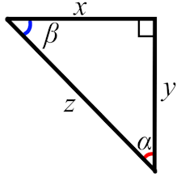
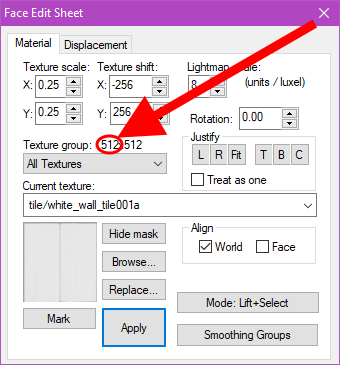
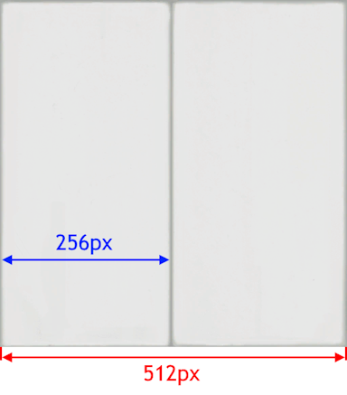

Paste the calculated texture scale value into the X texture scale of the angled surface.
Do with all of the other stats as you wish. You may also need to realign the texture.
If anything reports as NaN or Infinity when it shouldn't, send the values you tested with
to AT electrovoyage DOT on Discord.